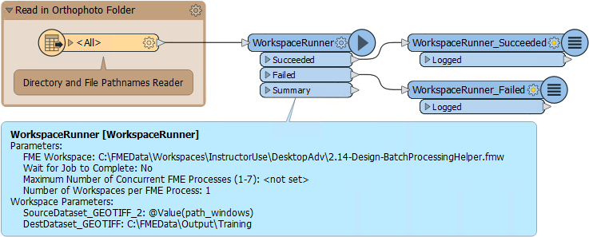
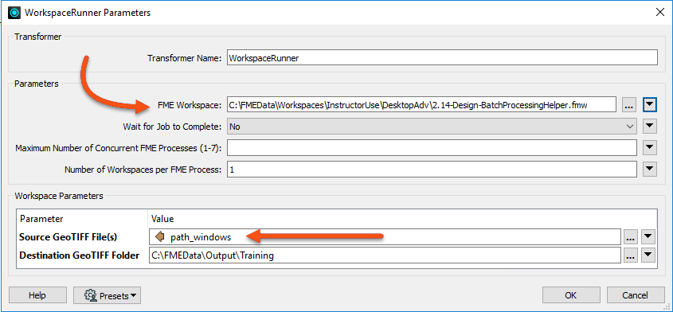
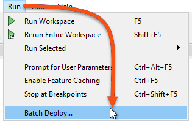

You can also accomplish batch processing using FME Flow. See the FME Flow Authoring course for more information.
After completing this lesson, you’ll be able to:
Batch processing involves processing multiple source datasets in the same workspace. By splitting each dataset into a separate process, performance can be improved. This is achieved with the WorkspaceRunner transformer.
You can also accomplish batch processing using FME Flow. See the FME Flow Authoring course for more information.
The WorkspaceRunner is a transformer that runs another FME workspace when used in a translation. One use of it is for chaining multiple workspaces to run one after another. However, it can run multiple workspaces simultaneously through batch processing and is especially effective when used in conjunction with the Directory and File Pathname reader.
For example, we have a workspace that reads in orthophoto tiles and clips them to neighborhood boundaries, writing them using a combination of tile and neighborhood as the output filename:

Imagine we get new orthophotos each week. Instead of changing the data in the previous workspace each time, we create a workspace to batch process all the new files. This allows FME to start multiple processes simultaneously so that the data is processed faster:

To set up the WorkspaceRunner in a workspace (the Parent), the FME Workspace parameter is pointed to the workspace to be batch processed (the Worker or Helper). The Source File parameter is set to path_windows, an attribute created by the Directory and File Pathnames Reader:

The option to Wait for Jobs to Complete ensures one job is completed before starting another. Setting this option prevents multiple Concurrent FME Processes.
If the job order is unimportant, the parameter Maximum Number of Concurrent FME Processes can be set. This causes multiple FME processes (up to a maximum of seven) to be launched, and these can be seen in the Details tab of Windows Task Manager:

Notice that the FME Engine processes are separate from the FME Workbench and Data Inspector processes. One of the FME.EXE processes runs the parent workspace, and the others run the helpers.
Batch deploy is available under the Run menu in FME Workbench. It supports both instant batch processing and the creation of batch files. This allows you to process a large number of source datasets in the current workspace and produce a separate output for each:

If the Run > Batch Deploy option is disabled, it is because there is currently no source or destination dataset defined in the workspace.
Batch deploy operates in the form of a Wizard. The user specifies the input and output datasets plus any other relevant settings, such as a suffix for the output file names.
If the process is not carried out right away, FME creates a batch .tcl file containing the batch process settings and a .bat file you can run to start the process later.
Batch Processing (on Form) can also be done using the command line or an FME Command File. These techniques are not covered in this course, but if you want to learn more, you can check out the FME Batch Processing Methods Knowledge Base article.